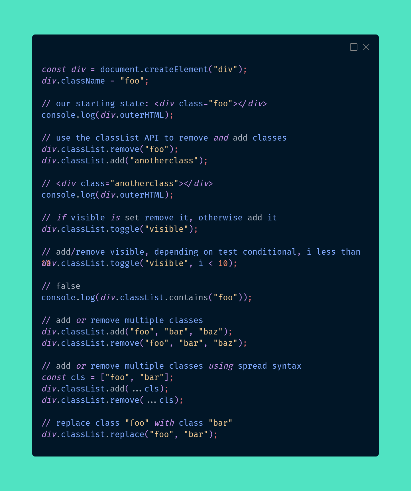
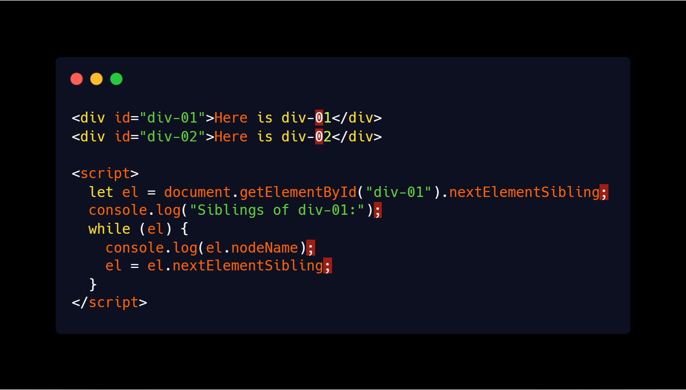
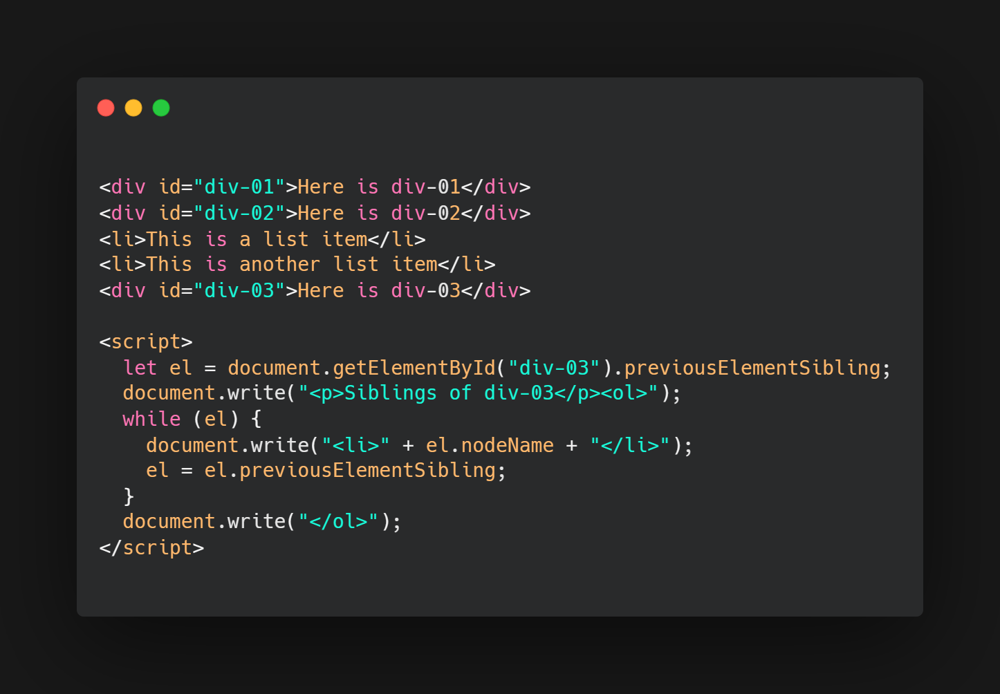
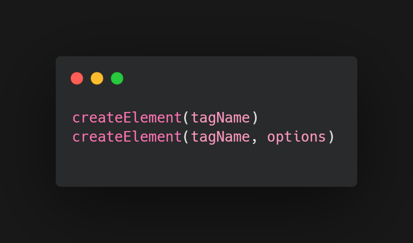
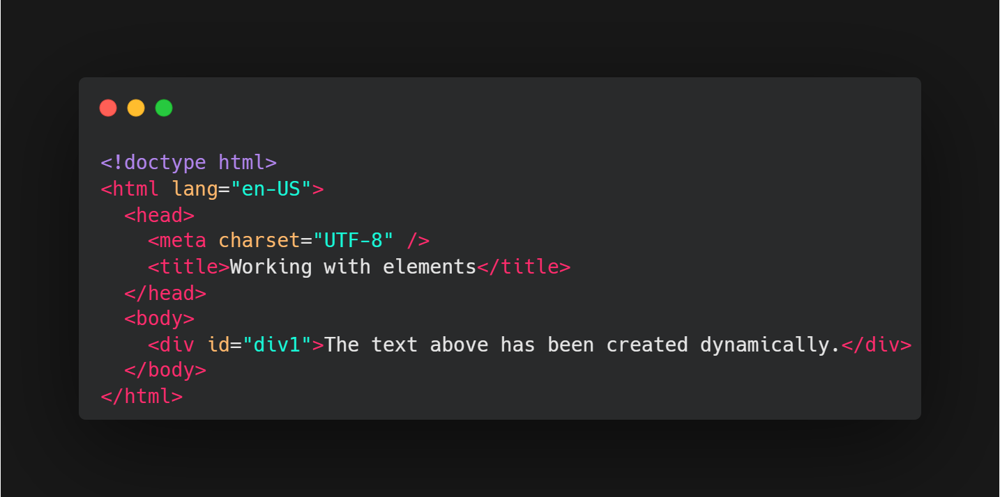
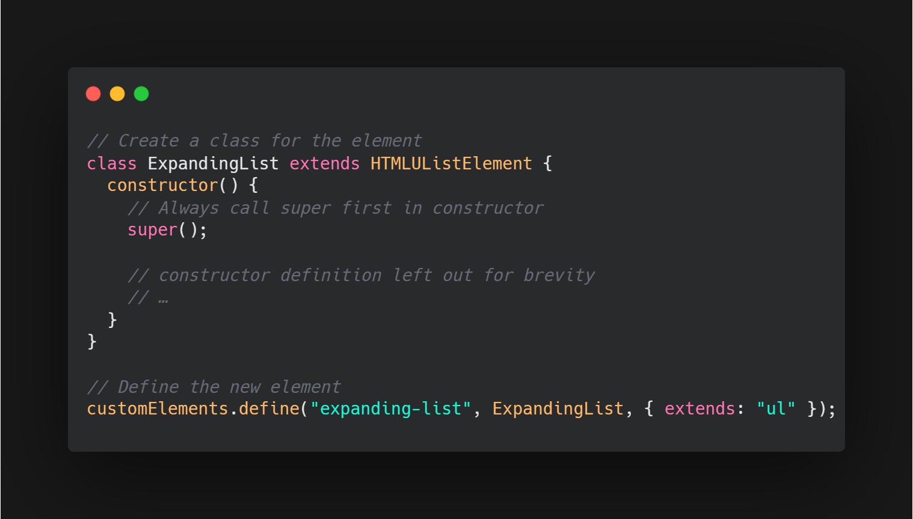
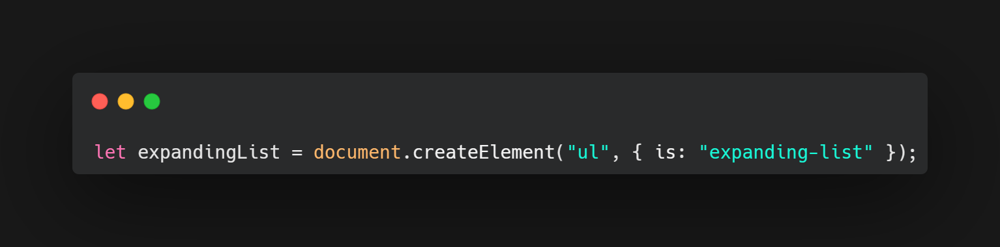

The DOM is a JavaScript representation of a webpage It's your JS "window" into the contents of a webpage.
It's a bunch of objects that you can interact with via JS.
On dev tools; type console.dir(document) to see the objects and properties that make the website.
Indicate which element you want to select asking the DOM for that ID. e.g.
document.getElementById("toc")
You can use it to create a vairblee.g.
const content = document.getElementById("toc")
on console type "toc" or console.dir(toc) to get the properties like children elements, tag, and so on of such.
// Write your preview in here:
const image = document.getElementById("unicorn");
const heading = document.getElementById("mainheading");
The getElementsByTagName method of Document interface returns an HTMLCollection of elements with the given tag name. e.g.
function getAllParaElems() {
const allParas = document.getElementsByTagName("p");
const num = allParas.length;
alert(`There are ${num} paragraph in this document`);}
onclick ="getAllParaElems();"
Show all p elements in document
document.getElementsByTagName('img')
// returns:
HTMLCollection(4)
[img#banner, img.square, img.square, img.square, banner:img#banner]
const allImages = document.getElementsByTagName('img')
const allImages = document.getElementsByTagName('img')
change images sourcefor (img of images) { img.src = es.wikipedia.org/wiki/Gibson_Les_Paul}
The getElementsByClassName method of Document interface returns an array-like object of all child elements which have all of the given class name(s). e.g.
We can also use methods of Array.prototype on any HTMLCollection by passing the HTMLCollection as the method's this value. Here we'll find all div elements that have a class of'test': e.g.
const squareImages = document.getElementsByClassName('square')
change images sourcefor (img of squareImages) {img.src = es.wikipedia.org/wiki/Matisse_paintings}
The Document method querySelector() returns the first Element within the document that matches the specified selector, or group of selectors. If no matches are found, null is returned.
document.querySelector("h1")
document.querySelector("#red")
document.querySelector(".big")
document.querySelector("img:nth-of-type(2)")
document.querySelector("a[title='java']")
// returns the anchor element:(a)href="/wiki/Java" title="Java"(/a)
The Document method querySelectorAll() returns a static (not live) NodeList representing a list of the document's elements that match the specified group of selectors.
document.querySelectorAll("h1")
document.querySelectorAll("p a")
// Returns:NodeList(17) {a, a, a, a, a, a, ...}
// We can iterate over them using JSconst links = document.querySelectorAll("p a")
for (let link of links){console.log(link.href)}
// Returns the src url from each anchor within paragraph// Your code goes in here:
const doneTodos = document.querySelectorAll("li.done");
// selects all elements within li's
const checkbox = document.querySelector("#scales");
// selects the element with the id 'scales'
As a getter, it approximates the text the user would get if they highlighted the contents of the element with the cursor and then copied it to the clipboard. As a setter this will replace the element's children with the given value, converting any line breaks into "br" elements.
Note: innerText is easily confused with Node.textContent, but there are important differences between the two. Basically,innerText is aware of the rendered appearance of text, while textContent is not.
const allLinks = document.querySelectorAll('a');
for (let link of allLinks) { link.innerText = "I am a link! click me!"}
// This changes the text shown on every 'a' element to 'I am a link! click me!'
*To insert the HTML into the document rather than replace the contents of an element, use the method insertAdjacentHTML().
This example fetches the document's current HTML markup and replaces the "<" characters with the HTML entity "<" , thereby essentially converting the HTML into raw text. This is then wrapped in a "pre" element. Then the value of innerHTML is changed to this new string. As a result, the document contents are replaced with a display of the page's entire source code.
document.documentElement.innerHTML = `${document.documentElement.innerHTML.replace(/< /g, "& l t;" , )}`;
// adding a sup to an "h1"
document.querySelector('h1').innerHTML += '"sup" new text "/sup"'
// this returns the "h1" with a superior text
const spanText = document.querySelector("span");
spanText.innerText = "Disgusting"
// This returns the span text changed to "Disgusting" as asked.
The Element.classList is a read-only property that returns a live DOMTokenList collection of the class attributes of the element. This can then be used to manipulate the class list.
The getAttribute() method of the Element interface returns the value of a specified attribute on the element.
The setAttribute() method of the Element interface sets the value of an attribute on the specified element. If the attribute already exists, the value is updated; otherwise a new attribute is added with the specified name and value.
const image = document.querySelector("img");
image.setAttribute("src", "https://devsprouthosting.com/...");
image.setAttribute("alt", "chicken");The 'style' HTML element contains style information for a document, or part of a document. It contains CSS, which is applied to the contents of the document containing the 'style' element.
You can declare something like: const h1 = document.querySelector('h1'); and change it to:
This way only works for inline style (which is rarely used)
h1.style.color = 'blue'
h1.style.fontSize = '3em'
h1.style.border = '2px dashed red'
const links = document.querySelectorAll('a')
for (let link of links) {link.style.color = 'rgb(0, 108, 134)'}
const container = document.querySelector("#container");
const image = document.querySelector("img");
container.style.textAlign = "center"
container.style.width = "150px"
container.style.borderRadius = "50%"
The Element.classList is a read-only property that returns a live DOMTokenList collection of the class attributes of the element. This can then be used to manipulate the class list.
Using classList is a convenient alternative to accessing an element's list of classes as a space-delimited string via element.className. e.g.
The read-only parentElement property of Node interface returns the DOM node's parent Element, or null if the node either has no parent, or its parent isn't a DOM Element.
The read-only children property returns a live HTMLCollection which contains all of the child elements of the element upon which it was called.
The Element.nextElementSibling read-only property returns the element immediately following the specified one in its parent's children list, or null if the specified element is the last one in the list.
The Element.previousElementSibling read-only property returns the Element immediately prior to the specified one in its parent's children list, or null if the specified element is the first one in the list.
The next-sibling combinator (+) separates two selectors and matches the second element only if it immediately follows the first element, and both are children of the same parent element.
In a HTML document the document.createElement() method creates the HTML element specified by tagName, or an HTMLUnknownElement if tagName isn't recognized.
This creates a new 'div' and inserts it before the element with the ID "div1".
The following example snippet is taken from our expanding-list-web-component example (see it live also). In this case, our custom element extends the HTMLUListElement, which represents the 'ul' element.
If we wanted to create an instance of this element programmatically, we'd use a call along the following lines:
In a HTML document the document.createElement() method creates the HTML element specified by tagName, or an HTMLUnknownElement if tagName isn't recognized.